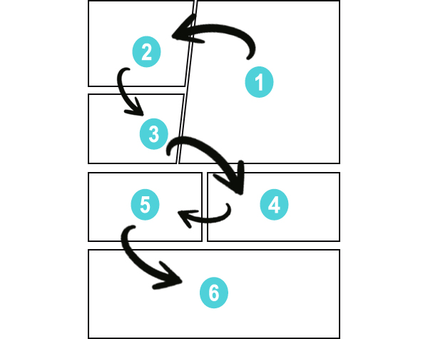

Se conoce como mangas a las historias literarias procedentes de Japón. Los mangas son bastante parecidos
a los comics estadounidenses con la diferencia, de que los mangas se leen de derecha a izquierda, al contrario
de los comics y los libros a los que nosotros estamos acostumbrados.
Existen varios tipos de mangas según el público el que van dirigidos:
Shonen:
dirigidos a hombres adolescentes.
Shōjo:
Dirigido a mujeres adolescentes.
Kodomo:
Dirigido a niños pequeños
Seinen:
Dirigido a hombres jóvenes y adultos
Josei:
Dirigido a mujeres jóvenes y adultas
También se pueden clasificar según su temática en:
Isekai:
El protagonista es transportado a otro mundo donde se desarrolla la trama.
Spokon:
Historias relacionadas con el deporte
Yuri:
Historia de amor entre chicas
Yaoi:
Historia de amor entre chicos
Nekketsu:
Mangas de acción donde se resalta el poder del esfuerzo, la amistad y la superación personal.